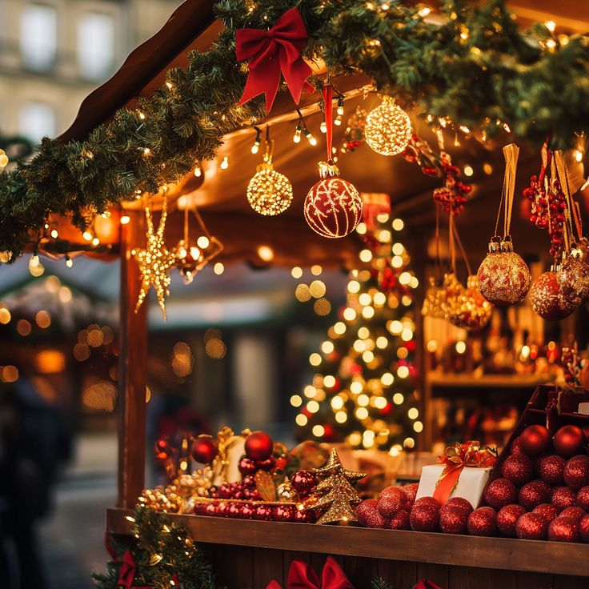

01✦
SWEET & WARM
WINTER BAKERY
진저브레드 쿠키와 따뜻한 핫초코, 겨울을 닮은 달콤한 디저트.
A MAGICAL CHRISTMAS MARKET
겨울의 가장 반짝이는 순간
반짝이는 불빛 아래, 소중한 사람과 함께하는
가장 따뜻한 겨울 마켓으로 초대합니다.
01 / ABOUT THE FESTIVAL

A LITTLE MAGIC IN DECEMBER크리스마스의 설렘이 머무는 곳,
올겨울 가장 따뜻한 만남이 시작됩니다.
CHRISTMAS VILLAGE는 유럽의 겨울 마켓에서 영감을 받은 시즌 축제입니다. 아기자기한 수공예 소품과 달콤한 겨울 디저트, 마음을 녹이는 캐럴과 다양한 체험이 한자리에 모입니다.
반짝이는 조명과 향긋한 계피 향이 가득한 이곳에서 소중한 사람들과 오래 기억될 겨울의 하루를 만들어 보세요.
마켓 둘러보기 →02 / CHRISTMAS MARKET
마음을 담은 선물부터 달콤한 겨울 간식까지, 다양한 상점을 만나보세요.
진저브레드 쿠키와 따뜻한 핫초코, 겨울을 닮은 달콤한 디저트.
손끝으로 완성한 오너먼트와 캔들, 특별한 날을 위한 작은 선물.
겨울 리스와 테이블 장식으로 나만의 크리스마스를 완성해요.
03 / FESTIVAL PROGRAM
보고, 듣고, 만들고, 함께 웃는 다채로운 프로그램을 즐겨보세요.
산타와 사진을 남기고 작은 크리스마스 선물도 받아보세요.
광장을 채우는 따뜻한 목소리와 라이브 캐럴.
나만의 장식품을 만들어 트리에 걸어보세요.
겨울 과일과 크림으로 작은 케이크를 꾸며보는 시간.
04 / FESTIVAL MAP
서울특별시 중구 겨울로 25
※ 행사 안내를 위한 가상의 주소입니다.
05 / NOTICE
마켓 입장은 무료이며, 일부 체험 프로그램은 사전 예약 또는 현장 접수가 필요합니다.
행사장 내 주차 공간이 협소하므로 대중교통 이용을 권장합니다. 본 주소와 교통 정보는 제작용 예시입니다.
야외 프로그램은 기상 상황에 따라 장소 또는 시간이 변경될 수 있습니다. 방문 전 공지사항을 확인해 주세요.
A SEASON TO REMEMBER
올겨울, 크리스마스 빌리지에서 만나요.
사전등록 하러 가기 ↗